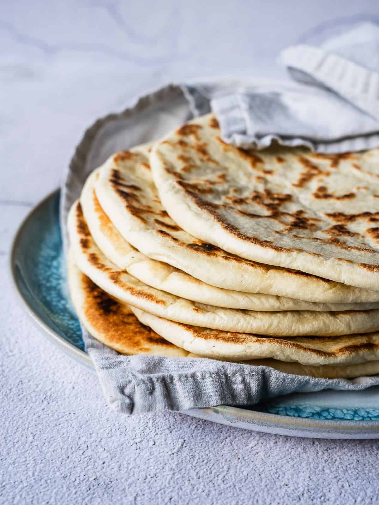

Taboon is the name given to the clay ovens historically used by Palestinians, but also refers to its namesake flatbread. While taboon bread is uniquely Palestinian, similar breads are common across the entire Arab world, albeit prepared slightly differently and called by varying names in each region, with a history stretching back thousands of years.
Meal prep time : 3 hours 30 minutes
Servings : 8-12